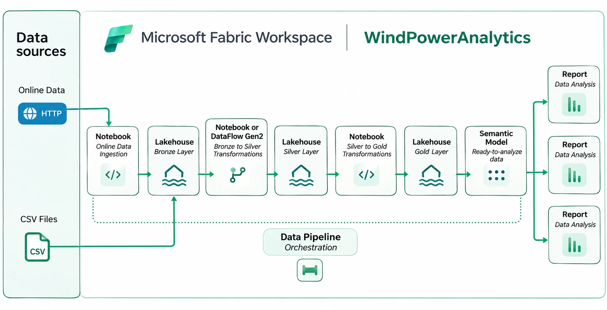
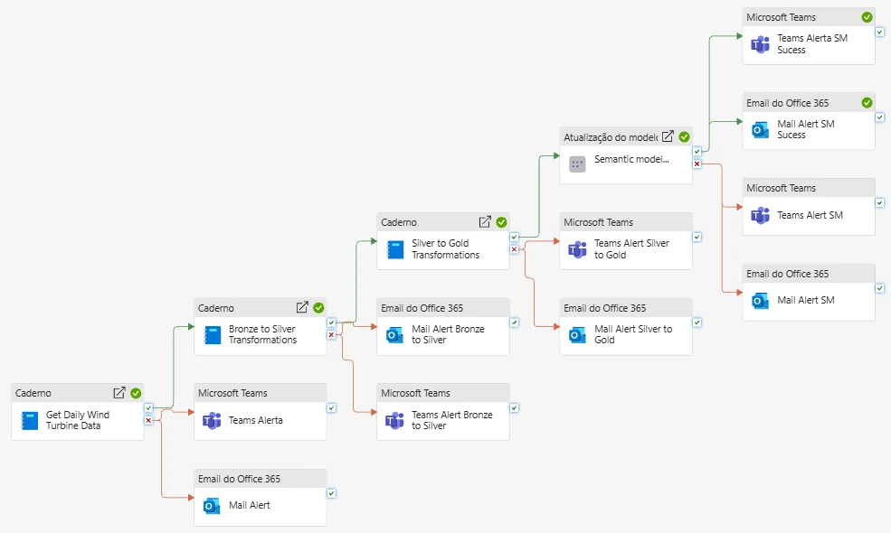
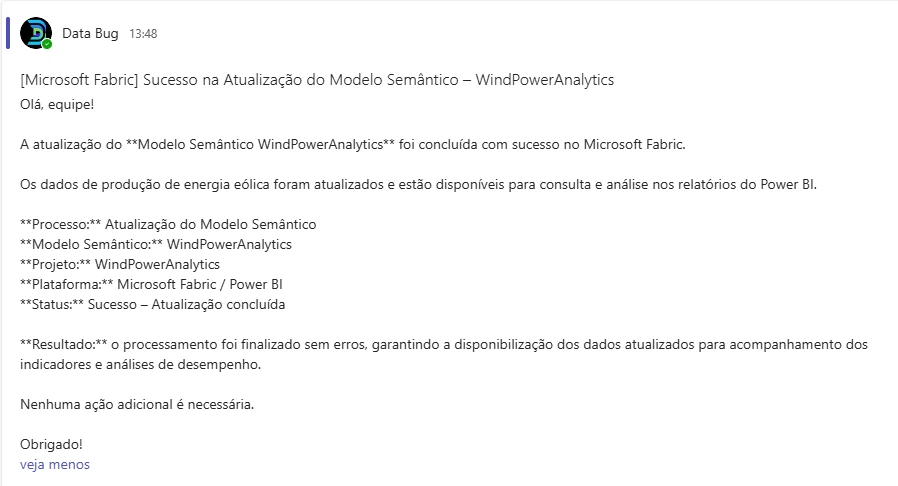
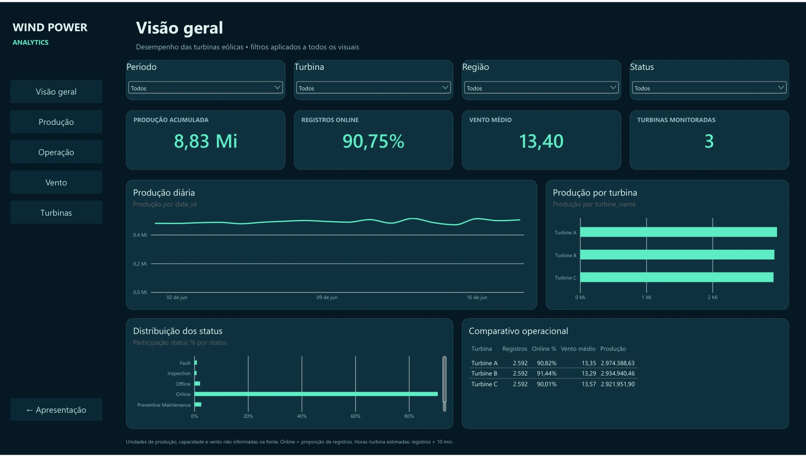
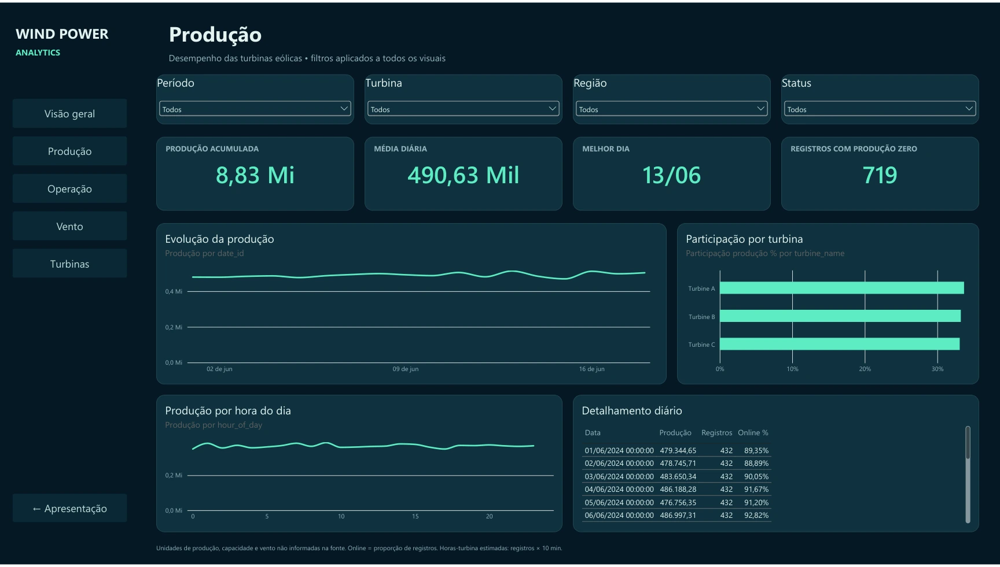
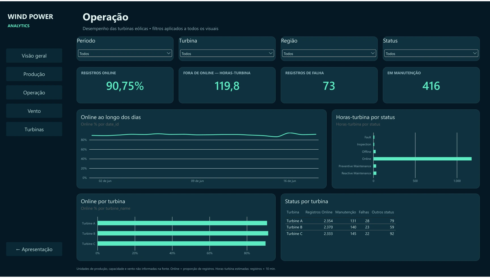
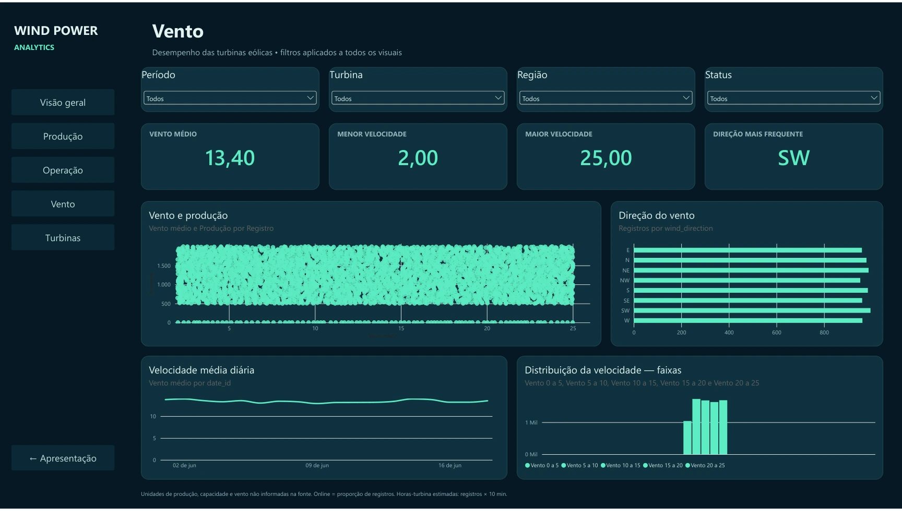
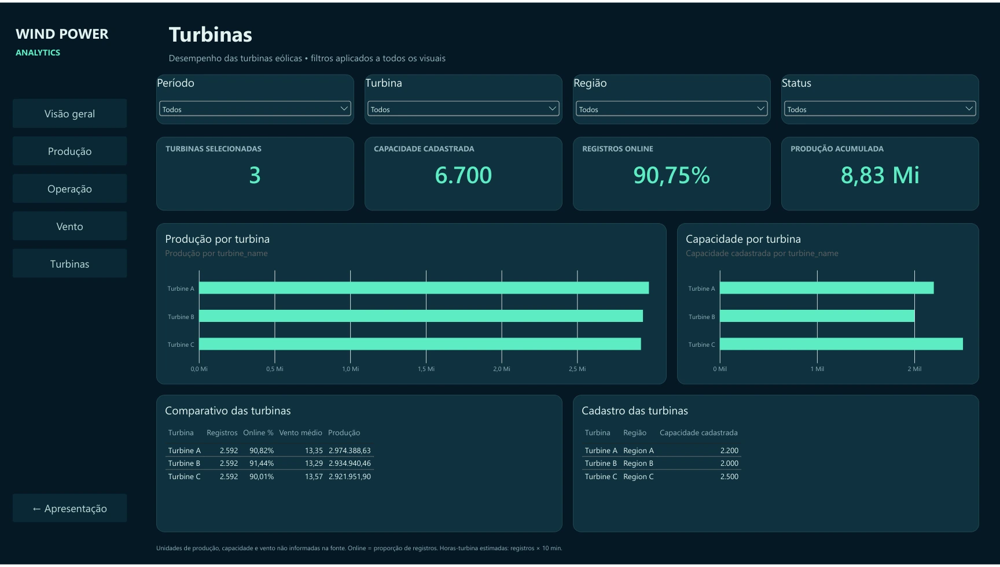

Visão do problema e arquitetura
Objetivo: integrar indicadores de geração eólica, vento e disponibilidade operacional. O desenho mostra a origem dos dados, o OneLake e o caminho de transformação até o Power BI.
Uma solução de Engenharia de Dados de ponta a ponta para acompanhar a produção de energia eólica, integrando ingestão, arquitetura Medallion, transformações em PySpark, modelagem dimensional, orquestração e um produto analítico em Power BI.
Da origem dos dados à análise de produção eólica: arquitetura Microsoft Fabric, camadas Bronze, Silver e Gold, pipeline, monitoramento, modelo semântico e cinco páginas do Power BI.
Acompanhe as etapas reais da solução nas seções a seguir, enquanto a apresentação animada não está disponível nesta página.
Arquitetura construída no Microsoft Fabric com Lakehouses separados por camada. O fluxo organiza os registros de turbinas eólicas desde a captura até a disponibilização dos dados para análise.

df = spark.read.format("delta").load(bronze_table_path)df_transformed = (df
.withColumn("wind_speed", round(col("wind_speed"), 2))
.withColumn("energy_produced", round(col("energy_produced"), 2))
.withColumn("day", dayofmonth(col("date")))
.withColumn("month", month(col("date")))
.withColumn("quarter", quarter(col("date")))
.withColumn("year", year(col("date")))
.withColumn("time", regexp_replace(col("time"), "-", ":"))
# …
)fact_wind_power centraliza os registros da produção e se relaciona às dimensões dim_date, dim_time, dim_turbine e dim_operational_status. As dimensões oferecem contexto temporal, características das turbinas e status operacionais.
fact_wind_powerTabela fato · produção e ventodim_dateRelacionada por date_iddim_timeRelacionada por time_iddim_turbineRelacionada por turbine_iddim_operational_statusRelacionada por status_idO fluxo operacional reúne a coleta diária Get Daily Wind Turbine Data, o processamento das camadas do Lakehouse e a atualização do modelo semântico. O monitoramento identifica falhas e sucessos para apoiar a operação.

Coleta e carga de novos dados de turbinas para a camada de entrada, com acompanhamento do processamento no Fabric.
Aplicação de regras de limpeza, geração de atributos temporais e preparação do modelo Gold em tabelas Delta.
Disponibilização e atualização dos dados analíticos utilizados pelo Power BI, com atenção a mudanças de schema.
Monitoramento de execuções no Fabric e comunicação de sucesso ou falha por notificações no Teams e e-mail.

Durante a implementação, a solução também exigiu tratamento de evolução do schema Delta, alinhamento entre dimensões e modelo semântico e observação de limites de capacidade Spark. Esses pontos fazem parte da experiência prática de operação da plataforma.
O relatório final integra cinco perspectivas: Visão geral, Produção, Operação, Vento e Turbinas. Os painéis permitem comparar produção acumulada, registros online, condições do vento e desempenho das turbinas monitoradas.





Uma leitura em sequência, do desenho da solução até o relatório entregue. A apresentação completa do WindPowerAnalytics foi organizada como um carrossel de 12 páginas para o LinkedIn.
Objetivo: integrar indicadores de geração eólica, vento e disponibilidade operacional. O desenho mostra a origem dos dados, o OneLake e o caminho de transformação até o Power BI.
Recebimento dos dados CSV/web no Lakehouse Bronze. Esta camada preserva os registros de origem e serve como ponto de partida para o processamento.
Notebooks PySpark estruturam e padronizam informações temporais, de produção, status de operação e características das turbinas.
Publicação das cinco tabelas Delta: dim_date, dim_time, dim_turbine, dim_operational_status e fact_wind_power. A modelagem organiza as métricas para consumo pelo modelo semântico.
O processo Get Daily Wind Turbine Data automatiza a ingestão e participa do fluxo de atualização. Os notebooks e a atualização do modelo semântico compõem a esteira analítica.
O Monitoring Hub permite acompanhar as execuções, enquanto alertas no Teams e e-mail comunicam os resultados do processamento e da atualização do modelo semântico.
O relatório reúne Visão Geral, Produção, Operação, Vento e Turbinas, transformando a base Gold em acompanhamento operacional e análise de desempenho.
Veja as 12 páginas da jornada, da arquitetura à entrega do relatório.
Baixar apresentação em PDFO WindPowerAnalytics demonstra a conexão entre engenharia, automação, modelagem e experiência analítica. A entrega não termina na criação de tabelas: inclui preparação do modelo semântico, monitoramento de falhas e visualização orientada às perguntas do negócio.